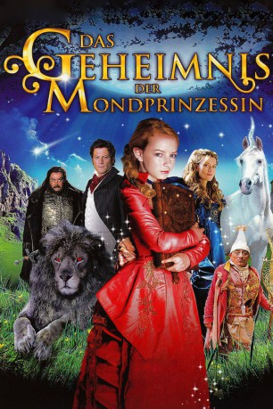

#6621 Das Geheimnis der Mondprinzessin
 
 IMDB-Wertung: 6.2 / 10
IMDB-Wertung: 6.2 / 10  Metascore: 0
Metascore: 0 
Etwas stimmt nicht in Moonacre Manor. Das Klavier spielt von selbst, der Hund erscheint im Spiegel als Löwe, nachts streift ein Einhorn durch den Garten und immer wieder legt jemand fremdartige Kleider in Marias Zimmer. Das gerade verwaiste Mädchen lebt nun widerwillig bei ihrem Onkel, dem wortkargen Sir Benjamin. Als sie versucht, das Rätsel des Hauses zu lösen, stößt sie auf einen uralten Fluch, der seit Jahrhunderten über dem Tal liegt und die Fehde zwischen den Familien der Merryweathers und der De Noirs nährt. Nur eine Mondprinzessin kann die endgültige Zerstörung noch aufhalten. Gut, dass eine ganze Schar von fantastischen Kreaturen darauf brennt, Maria bei der Rettung dieser magischen Welt beizustehen.
Jahr: 2008
Dauer: 104 Minuten
FSK: 12
Land: Ungarn Studio: IntersonicTonspuren: DTS - ,
Untertitel: Deutsch,
Auflösung: 1080p (1920x816) Größe: 6963 MB
Genre: Abenteuer, Fantasy, Familie, Liebe
Regisseur: Gabor Csupo
Drehbuch: Lucy Shuttleworth
Soundtrack:
Darsteller:
- Dakota Blue Richards als Maria Merryweather
 Juliet Stevenson als Miss Heliotrope
Juliet Stevenson als Miss Heliotrope Tim Curry als Coeur De Noir
Tim Curry als Coeur De Noir Augustus Prew als Robin De Noir
Augustus Prew als Robin De Noir Natascha McElhone als Loveday
Natascha McElhone als Loveday Ioan Gruffudd als Sir Benjamin Merryweather / Sir Wrolf Merryweather
Ioan Gruffudd als Sir Benjamin Merryweather / Sir Wrolf Merryweather- Tamás Tóth als Vicar
- György Szathmári als Lawyer
- George Mendel als Priest
- Michael Webber als Digweed
- Szabolcs Csák als Henry
- Lurko als Wrolf the Dog
- Zoltán Markovits als David
- Marcell Tóth als Richard
- Zoltán Barabás Kis als Dulac
- Andy Linden als Marmaduke Scarlet
- Csador als The Little White Horse
- Sandor Istvan Nagy als Coeur De Noir's Man , uncredited
- Oliver Simor als Wedding Guest , uncredited
Datei: X:\2008(G-M)\Geheimnis der Mondprinzessin, Das (2008, FSK12, 1920x816).mkv seit 25.07.2017
Festplatte: HD 2008(G-Z)-2009(A-F)
 Es gibt insgesamt 73 Filme in der Gruppe '2008(G-M)'
Es gibt insgesamt 73 Filme in der Gruppe '2008(G-M)'